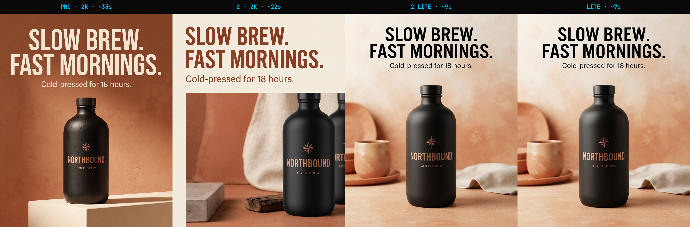
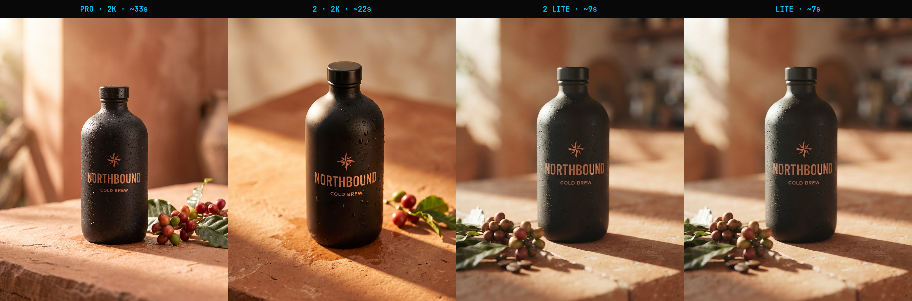

Google's Nano Banana models turn a single hero shot into an entire on-brand campaign — same product, endless contexts. This guide takes you from zero to a repeatable pipeline, one level at a time.
One product master → three different worlds. The world changes; the product stays itself.
01
Beginner · start here
The whole idea, in one line
Mint one master image, then attach it to everything. That single reference — not the model you pick — is what keeps your product looking like itself across every ad, format, and language. Everything in this guide is a variation on that one move.
STEP 1 Get an API key.
One key from either provider below reaches the same models. Grab one — it takes a minute.
STEP 2 Let Claude set you up.
Paste the onboarding prompt (next section) into Claude Code. It walks you through the rest and generates your first image.
STEP 3 Mint a master, then vary it.
Make one clean product image, then drop it into any scene. That's the method — the rest is practice.
Get a key — pick one
fal.ai · recommended
One key reaches Nano Banana Pro / 2 / Lite and 1,000+ other models. Works with the official MCP and the CLI in this repo. ~$0.08 per image on model 2.
Don't want to read docs? Paste this into Claude Code. It asks which key you have, tells you where to get one if you don't, wires up the fastest path, and generates your first master — one step at a time.
paste to Claude Code
I want to start generating on-brand product/campaign images using the
nano-banana-campaign workflow (Google's Nano Banana models). Set me up from zero:
1. Ask whether I already have a fal.ai key or a Google Gemini key. If I have
neither, tell me exactly where to get one, roughly what it costs, and help
me pick between them.
2. Based on my choice, set up the fastest way to call the models from here:
- fal.ai -> add the official fal MCP server, or use the nb.js CLI in this repo.
- Gemini -> point me at a Nano Banana MCP or the Google GenAI SDK.
3. Once a key works, generate my first PRODUCT MASTER (from a photo I give you,
or a text prompt), then make one variation from it to prove consistency.
Go one step at a time, and never print my API key.
Prefer one command? Wire in the official fal MCP
This makes every fal model a native Claude tool — no code. The key is sent per request and never stored.
What happens next: ask Claude to “mint a product master and make a kitchen variation.” It picks the model, runs it, and shows you the result. You've done the whole loop.
03
Intermediate · the method
Master first. Attach it to everything.
Before you make a single ad, lock one product image — ideally a multi-view master (front, three-quarter, label detail). This is the reference every downstream image inherits from. Lock the logo and label here, once.
The master. One product, three angles, one logo — generated once, then attached to everything that follows.
The CLI — the whole flow is two verbs
The nb.js CLI ships in the repo: dependency-free, reproducible, and it's what produced this guide. Install the skill, then:
1 · mint a master (text-to-image)
node nb.js gen --model 2 --aspect 3:2 --out master.png \
--prompt "studio product reference sheet: three views of the SAME bottle, front / three-quarter / label detail"
2 · derive scenes (attach the master)
node nb.js edit --model pro --ref master.png --aspect 4:5 --out poster.png \
--prompt "campaign poster, keep the product identical, headline exactly: \"SLOW BREW. FAST MORNINGS.\""
Text rendered in-image, product held on-brand by the attached master — a finished poster in a single generation.
Patterns that make it work
Name the consistency target. “Keep this EXACT bottle and its label identical. Do not redesign it.”
One axis per prompt. Change context or format or copy — never all three. Coherent sets, diagnosable failures.
Fixed text goes in quotes, verbatim.reading exactly: "SLOW BREW."
Validate by looking. Open every output; watch for subtle drift (a dropped subline, kerning) and re-roll the ones that slip.
04
Advanced · go pro
Tiers, references, and running it your way
Once the basics click, the depth is here: pick the right tier, stack multiple references, localize, and choose how you drive the models — a Claude skill, the CLI, or a native MCP server.
The fair tier bake-off — same master, same seed, four models
Attach the master to every model and the comparison measures rendering, not label invention. The headline finding: with a reference attached, all four tiers hold the same brand.


Tier
Endpoint
Time
Price
Controls
Pro
fal-ai/nano-banana-pro
~33s
$0.15/img
1K/2K/4K · web-search grounding
2· value pick
fal-ai/nano-banana-2
~22s
$0.08/img
0.5K–4K · thinking_level
Lite
google/nano-banana-lite
~7s
$1.00/unit
none (fixed ~1K)
Draft on Lite (speed), produce on 2 (best value — richest photoreal at 2K, half Pro's price), finish on Pro when you need 4K or web-search grounding. Always attach the master, whichever tier you use.Note: the two “Lite” endpoints are pixel-identical — treat them as one model. “Lite” bills per unit, not per image; its only edge is speed.
More levers
Multi-reference (up to 14). Feed shape from one image, logo from another, style from a third — --ref a.png --ref b.png. The single biggest quality lever.
Localize as an edit. Swap only the headline copy, keep the master attached. A prompt edit, not a reshoot — native-speaker review still required.
Reproducible runs. The generator behind this guide's own images is in the repo: scripts/generate-consistency-examples.js.
Install the Claude skill
The nano-banana-campaign skill teaches Claude the endpoints, the queue pattern, the master-first method, and the CLI — so it can drive the whole workflow on request.
install the skill
cp -r skills/nano-banana-campaign ~/.claude/skills/
export FAL_KEY=… # the CLI reads it from the environment